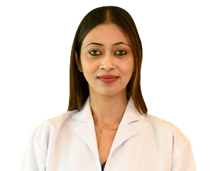

Dr. Ved Prakash
HOSPITAL DESIGNATION :
General, Minimal Invasive Bariatric Surgery
QUALIFICTION :
MBBS–SKM Govt College, Muzaffarpur MS (Surgery)-SS Medical College, Rewa, M
EXPERIANCE :
More than 22 years of experience
OPD TIMING :
Tues, Thurs & Sat: 10:00 am to 2:30 pm Room No: 16, Ground Floor, 3rd OPD
Dr.Sandeep Singh
HOSPITAL DESIGNATION :
Sr. Consultant – Paediatric Cardiology
QUALIFICTION :
DNB fellowship in diplomate national board ,MD Pediatrics 2005-2008
EXPERIANCE :
Senior Consultant ,pediatric cardiology, Metro hospital, Delhi NCR Consultant Ped Cardiology, Max Super-Specialty Hospital Delhi Indi
OPD TIMING :
Mon to Sat: 10:00 am to 03:00 pm

Dr. Aishwarya Sinha
HOSPITAL DESIGNATION :
Sr. Consultant- Obstetrics & Gynaecology
QUALIFICTION :
M.B.B.S DGO DNB FICOG
EXPERIANCE :
14 years Post PG Clinical in Saket City Hospital
OPD TIMING :
Mon to Sat: 9:00 am to 1:00 pm Room No. 228, 2nd Floor